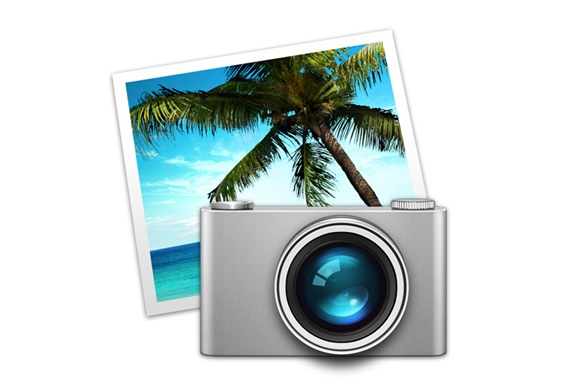

Project Intro
For our Next Project we are going to start using a new program called iPhoto. iPhoto is used to collect and look at pictures. It holds all of your pictures and makes them neat. We will be getting pictures from the Internet and bringing them into iPhoto. When we have all of the pictures we want, we will use them to make a slideshow.
Teaching Point:
Today we will learn how to save pictures from the Internet and put them together in iPhoto.
Saving Pictures we Like
There are alot of pictures on the internet. Anything that we are interested in, we can find pictures of. We can take pictures form any website we are on by just dragging them from the website onto our desktop. Today we will go on Picasa and find pictures that we like. To find pictures on our Picasa Page:
- Click on the group of pictures you want to look at such as Animals, Harry Potter, New York City, and so on.
- Drag it from the Safari Window onto your Desktop. This will save the picture.
Today's Assignment
Use Picasa to get pictures for your slideshow. When you see a picture you like, just drag it to your desktop.
Click here to go to our Pictures PageBack to School Portal